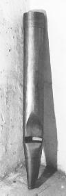

Premier Do
de BEAUCOURT
|
|
| |
Aucun tuyau ne comporte de frein harmonique. Sur cette chape, BEAUCOURT avait
placé un Bourdon 4' (appelé Flûte à la console), mais il
avait prévu un Flageolet au Récit (non posé). Or tous les Flageolets
étudiés dans les orgues de références sont des Bourdons
de tailles identiques à celui de
SAINT HIPPOLYTE DU FORT.
Nous avons donc décidé de transférer ce Bourdon au Récit
à partir du C2 (première note du clavier de Récit)
et avons fournis une Flûte à cheminée, d'une taille
proportionnée à la première
octave.1 (c.f. également la
description du jeu de Flageolet 4' du Récit.)
|